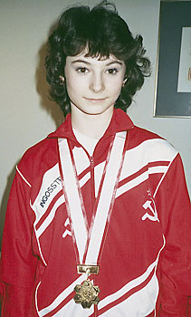

Svetlana Ivanova (USSR)
1988 Jr. European AA Champion

Svetlana was born on October 4, 1974 in Zhdanov. Ater retiring from artistic gymnastics, she took up tumbling and placed 4th at the 1992 Sports Acro World Championships.
Competition Results
1986
Jr. Friendship Tournament (Druzhba): 1st Team, 6th
AA
Jr. GDR-USSR Dual Meet: 1st Team, 2nd AA
Jr. Medico Cup: 1st AA
1987
Belgian Gym Masters: 16th AA, 2nd FX
Jr. Friendship Tournament (Druzhba): 2nd Team, 8th AA
Jr. USSR-GDR Dual Meet: 1st Team, 1st AA
Jr. USSR Championships: 1st AA
Riga International: 2nd AA
1988
Chunichi Cup: 3rd AA, 1st FX, 3rd V
Jr. European Championships: 1st AA, 1st V, 1st UB, 1st FX, 8th B
Jr. Friendship Tournament (Druzhba): 1st Team, 1st AA, 1st FX, 3rd B,
8th V
Tokyo Cup: 1st FX
1989
World Sports Fair: 4th AA, 1st FX, 4th V
1992
Sports Acrobatics World Championships: 5th Team, 4th Tumbling
This page was created on March 12, 2000 and was last updated on May 17, 2008.
© Gymn Forum